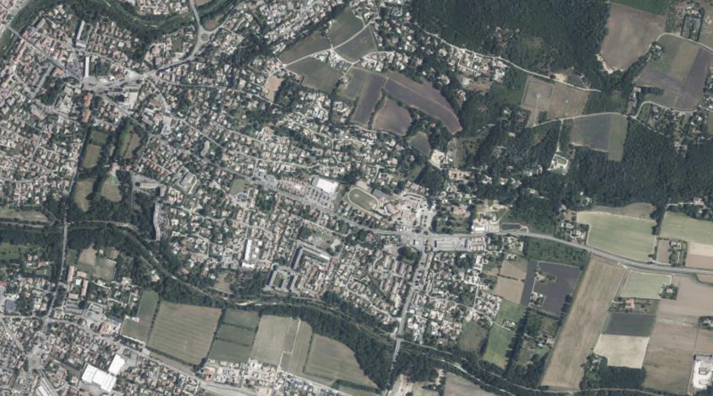
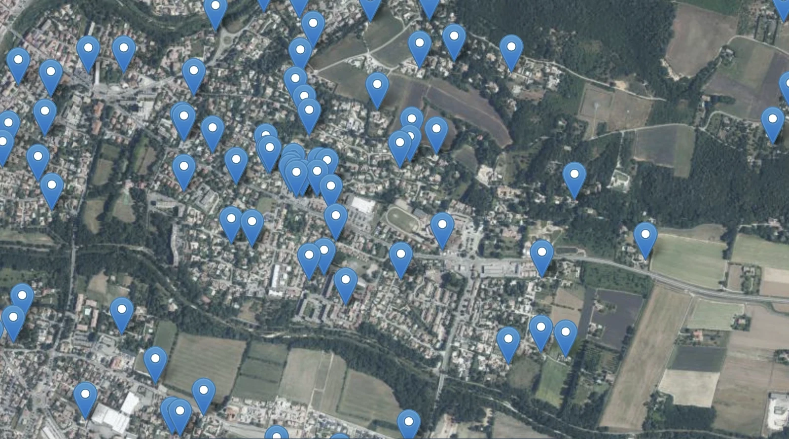

Like most people, I had used OpenStreetMap for years without ever really understanding the idea underneath it. It was just "the open Google Maps", with a lot of large systems already referenced in Europe.
It took a weekend at State of the Map to realize that OSM rests on two core principles, far more interesting than the map itself.
The first: you only map what can be seen. OSM records what is observable to anyone standing in a public place: a road, a roundabout, a building's footprint. The second: the map cannot be appropriated. It's a commons. No company, no state, no individual can enclose it. Everyone contributes, everyone benefits, and the thing itself belongs to no one.
Two modest-sounding rules. I've come to think they're the answer to a discomfort that keeps coming up in my own work, and in a debate I watched at the conference.
Panoramax, or: we put photos on the internet
One of the flagship projects in the room was Panoramax, an open, community-run alternative to Street View. Volunteers capture street-level imagery and publish it openly for anyone to use.
And immediately, the uncomfortable question: we are photographing streets and putting them online. A parked car that moves at a certain hour tells you someone has left home. Multiply that across a city, point modern AI at it, and you extract a lot that people never meant to share. So, do we want to enable that?
It's a fair question. But notice where it bites. The car was on the street, in plain view, the whole time. The imagery didn't create the information; it made it easier to collect at scale. The line that matters isn't between taking the photograph and not taking it — it's between taking it and misusing it.
"You're going to look inside people's homes"
I recognize that discomfort because it followed me all through my PhD. Every time I described mapping rooftop solar from aerial imagery, someone would say some version of: aren't you going to look inside people's homes?
It's the same worry as Panoramax, wearing different clothes. A solar panel on a roof is visible from the sky, and it always has been. What changed is that a model can now find all of them, everywhere, cheaply. The instinct, in both cases, is the same: this feels intrusive, so maybe we should keep the data closed.
The counter-intuitive part
Here's the thing about closing a dataset of something already visible: it doesn't hide the phenomenon. It only decides who gets to see it.
The rooftop is still there. The street is still filmed by every passing dashcam. Locking away the map doesn't remove the capability — it concentrates it in the hands of whoever can afford to rebuild it privately, while denying it to the researchers, local authorities and citizens who would use it in the open.
Cryptographers have a name for the mistake this avoids. Kerckhoffs's principle says a system should stay secure even if everything about it except the key is public. Security that depends on nobody knowing how the system works isn't security — it's a fragility waiting to be found.
Translate that to infrastructure data and it reads almost the same:
A system you have to keep secret to keep safe isn't safe, it's fragile. What's robust is what everyone can see, check, and correct.
This is where OSM's two principles click into place. Map only what's visible, and you're not building surveillance — you're describing what is already public. Make it inappropriable, and no single bad actor gains an asymmetric edge, because everyone holds the same map, including the people who would spot and fix its errors. You regulate the misuse, not the looking.


The case for open PV mapping
This isn't abstract for me. Rooftop solar is a near-perfect example of something hidden in plain sight: visible from space, yet largely missing from the official registries meant to track it. In several countries the gap between what's installed and what's recorded runs into the tens of percent.
You can close that gap two ways. You can buy exclusive high-resolution imagery, run it privately, and publish a number nobody else can reproduce. You get a figure standing on sand, trustworthy only as far as you trust the people who made it. Or you can do it in the open.
That's the bet behind EarthPV and DeepPVMapper: open imagery, open models, open data, and a crowdsourcing loop where anyone can verify a detection and feed the correction back in. The map isn't weaker for being public. Every extra pair of eyes that checks a panel, every community that corrects a boundary, makes it better. It's a public good in the literal sense: it gains value as more people use it.
I'm not trying to settle the grand "should data be open or closed" debate. My point is narrower, and I think harder to argue with: for infrastructure already visible from the sky or the street, the real choice was never "seen or hidden." It's "seen by a well-resourced few, or seen — and correctable — by everyone." Openness isn't the risky option here. It's the robust one.